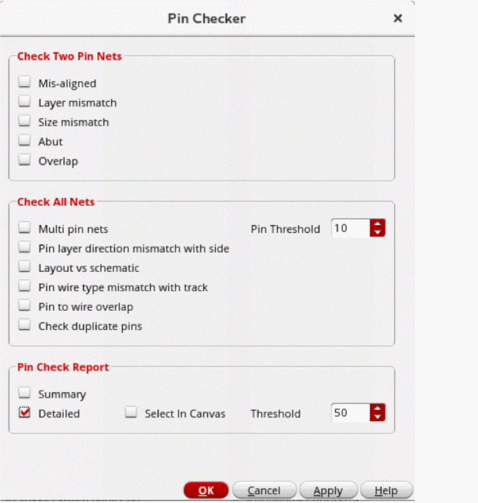
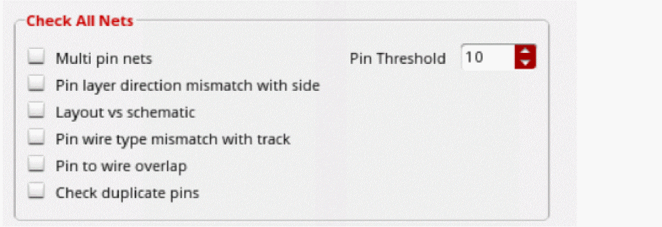
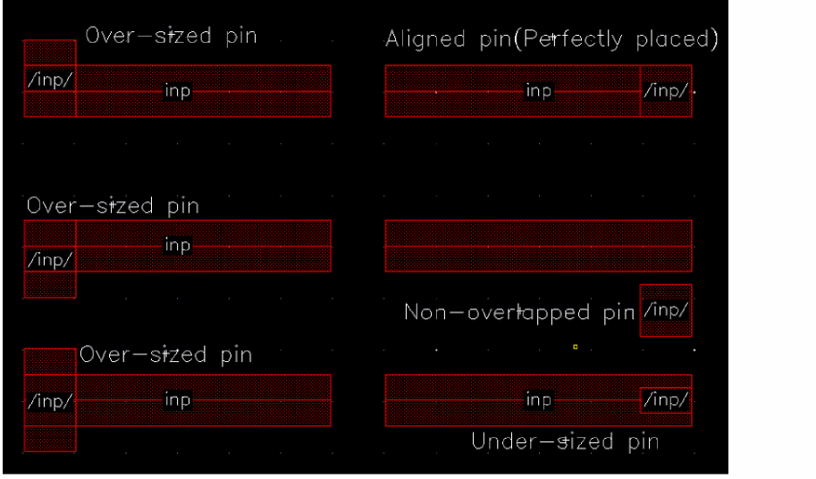
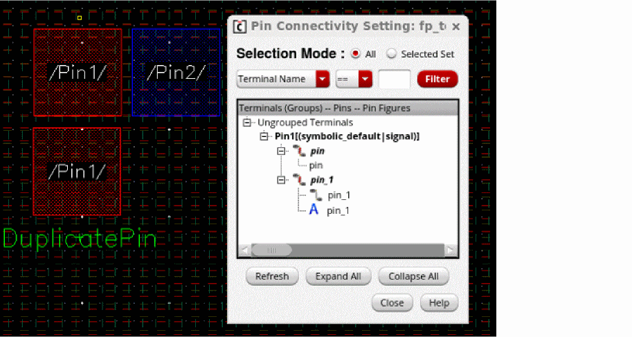
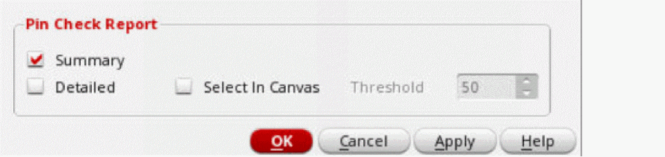
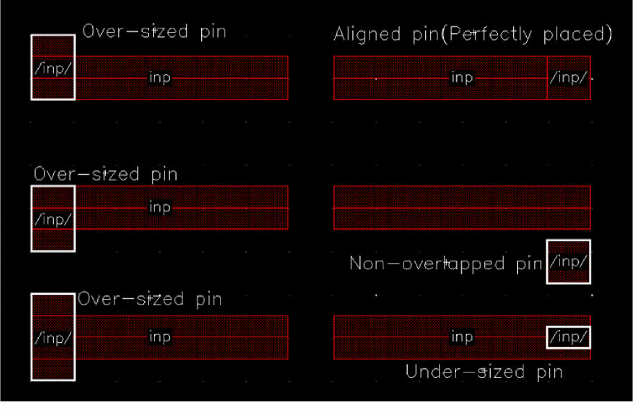

Checking Pins
Pin Checker lets you perform the following checks on pins and report the results:
- Check whether the pin layer directions match the assigned edge directions
- Check whether soft blocks pins are aligned, on the same layer, or of the same size
- Check for exact pin-to-pin abutment of connected pins
- Report nets with multiple pin shapes
-
Report pin overlaps, if any
-
Select Floorplan – Pin Checker to display the Pin Checker form. The Pin Checker can also be accessed from the Plan menu of the Pin Tool.
 -
In the Check Two Pin Nets section, the options are applicable only to the nets that are connected to two pins. Violations are reported in the Pin Check Report.
- Select Mis-aligned to check whether the connected pins are correctly aligned.
- Select Layer mismatch to check whether the connected pins are on the same layer.
- Select Size mismatch to check whether the dimensions of the connected pins are the same.
- Select Abut to check whether the connected pins are abutted to each other.
- Select Overlap to check whether the connected pins overlap each other.
-
In the Check All Nets section, the options are applicable to all nets and the violations are reported in the Pin Check Report.
- Select Multi pin nets to identify nets that have multiple pins and lists their names in the Pin Check Report. Specify a Pin Threshold to restrict the check to nets that have the specified number of pins.
- Select Pin layer direction mismatch with side to identify the pins for which pin layers do not have tracks in the specified pin side. This check, applicable only to the pins that have side layer constraints
- Select Layout vs schematic to identify extra pins that are present either in the schematic view or the layout view.
- If Select in Canvas is selected, the tool selects only those pins that are present in layout but missing in the schematic.
- Select Pin Wire Type mismatch with track to identify pins that are placed on the WSP tracks with mismatched wire types, the pins that are not snapped to the WSP tracks, and the pins that are placed on the WSP tracks but do not have any wire type constraints.
-
Select Pin to wire overlap to check if there is any physical overlap of pins with the wire. The figure below shows that the pins can be aligned on wires or be in violation as under-sized, over-sized, or non-overlapping.
-
Select Check duplicate pins to check for pins with the same terminal, pin, and fig name. The figure below shows that the figure name, pin name and terminal name is same for
/Pin1/.
-
In the Pin Check Report section, you can customize the information displayed in the report that is generated in the CIW after running Pin Checker.
- Select Summary to generate a summary report about the checks.
- Select Detailed to generate a detailed report in the CIW with information about nets as per the settings.
-
Choose Select In Canvas to select the reported nets in the design canvas after running the Pin Checker. The figure below shows that all violating pins are selected in the layout canvas when the Pin to wire overlap and Selected In Canvas options are selected.
- Select Threshold to specify the maximum number of nets to be reported.
- Click Apply.
Related Topics
Return to top